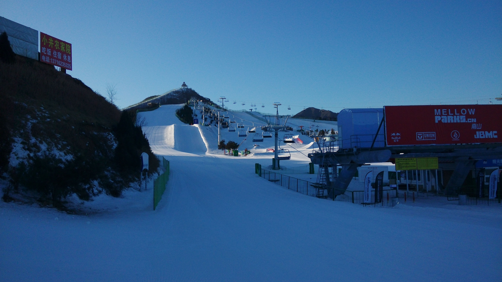
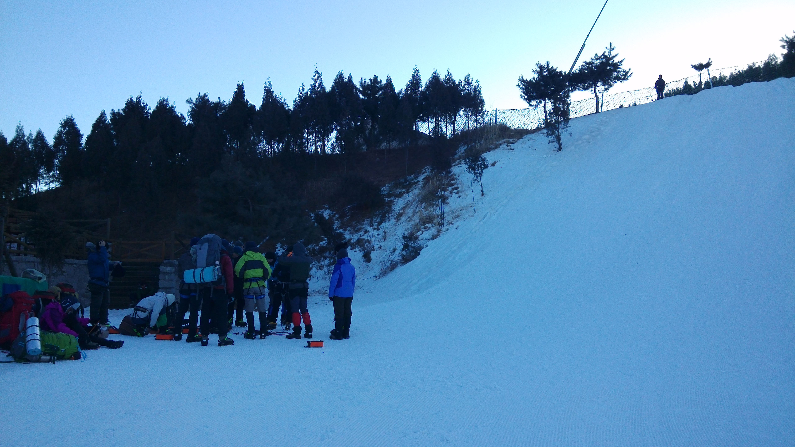
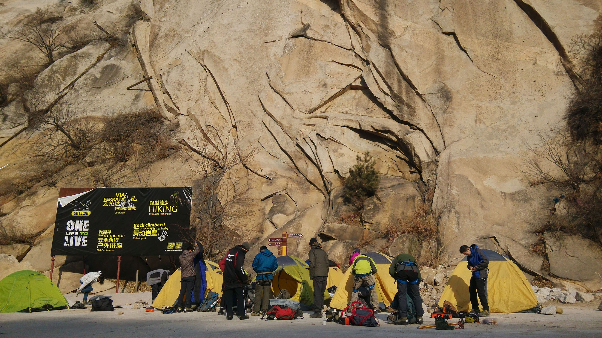
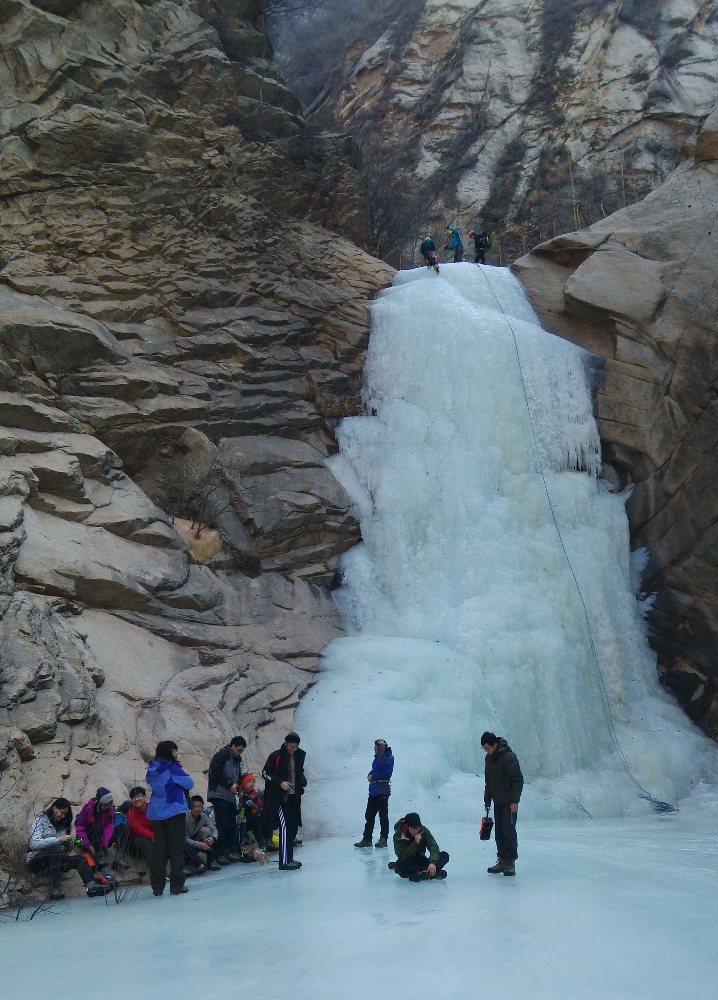
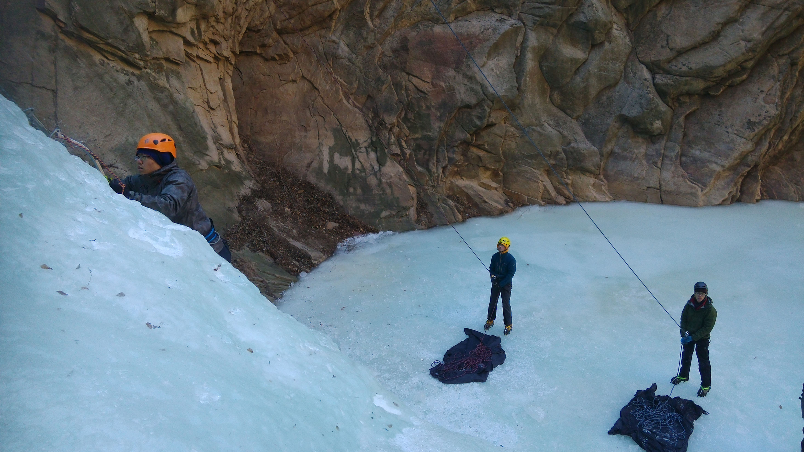
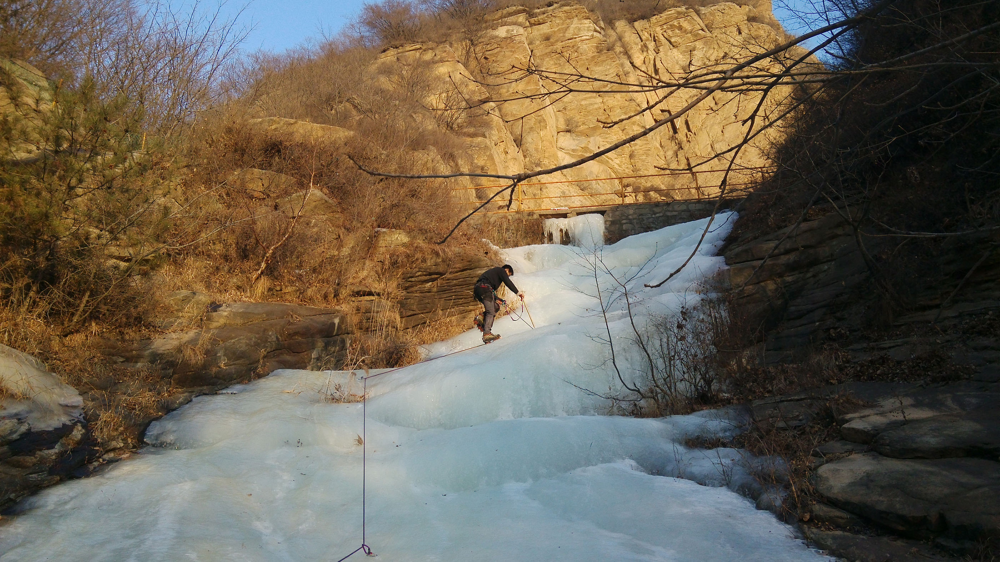
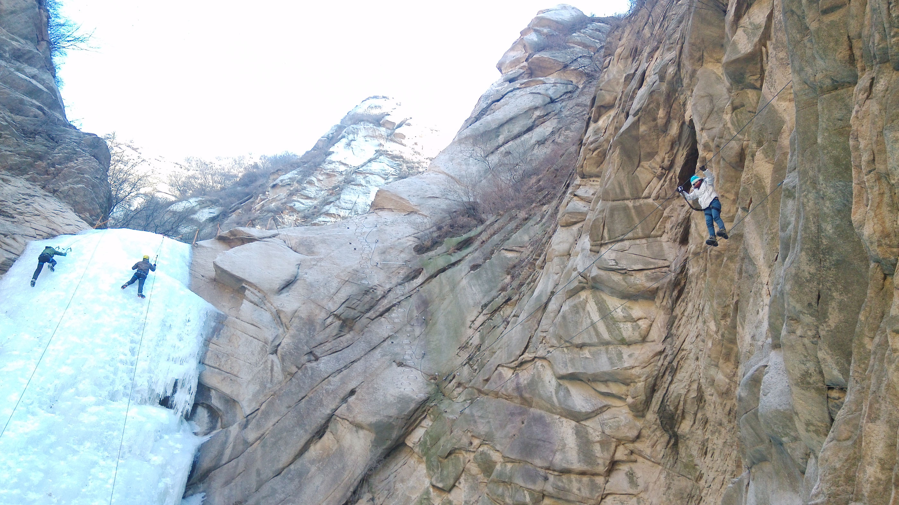
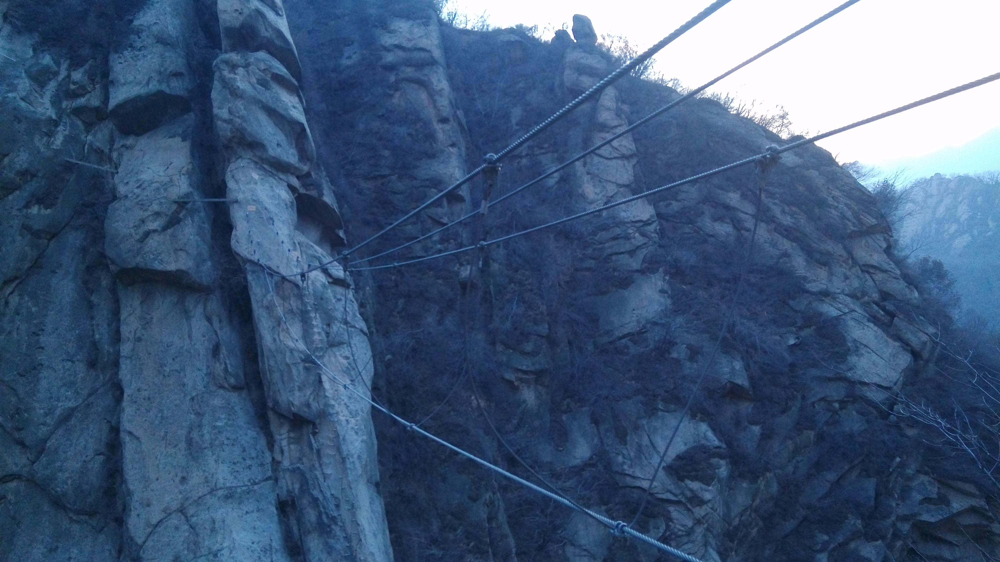

发信人: Germ (1赤那1), 信区: outdoor
标 题: 2015冬训总结 by 李耀宇
发信站: 饮水思源 (2015年02月05日23:55:21 星期四)
冬训总结
回家很多天了，才静下心来写总结，一回家事情总是一拖再拖，回家综合症也算是比较明
显。
总结还是从冬训训练开始，报名参加冬训之后，zyf 制定了训练计划。印象中冬训的训练
是持续两周，平时是体能训练，以跑步和引体向上为主，训练量也是可以的。之前zyf说计
划每天训练半个小时，结果都后来发现每天的训练时间都超过1小时。冬训训练时已经有点
考试周的节奏了，时间比较紧了，所以经常都是学一下午，晚上训练前后一个半小时，洗
澡，继续自习室，也算劳逸结合！周末是技术训练，hm和zcw的雪冰壁装备的讲解还是比较
细，雪坡制动，冰壁技巧也提前学习了，很有收获，顶绳保护部分之前练比较多了，所以
在学校岩壁主要是攀岩，被顶绳保护！
1.17 到北京，发现全身装备的17人在如家定3间房竟然成功了，如此的经济实惠（虽然睡
起来有点挤），下午购买食物分为两组，我们组果断的认为这次的走线任务不是很重，所
以决定走小资路线，食物买的比较充足，种类比较丰富，晚上高神请客，果断的补充储备
着能量。
18号临时决定外休整一天，19号向滑雪场进发，经历一系列波折，晚上到达南山滑雪场，
稍作休息便戴上头灯，穿着冰爪，走向雪坡。
雪坡算是比较陡，积雪很深，雪也比较硬，是比较好的训练场地，二话不说，分组训练，
制作锚点，沿路绳行进，滑坠制动都练的很认真。
1.雪地上要学会正确的使用工具，有时候会事半功倍；
2.雪地技巧在实践中会有不一样的认识，比如滑坠制动，实践中发现如果没有把握很好的
发力时刻，没能很及时的把身体压上去，很难达到较好的制动效果，需在一次次滑坠中总
结
3.雪地有风险，滑坠需谨慎，滑坠中可能会对膝盖造成一些伤害，力求掌握正确的动作
 screen.width - 200){this.width = screen.width - 200}">
滑雪场
 screen.width - 200){this.width = screen.width - 200}">
滑雪坡
滑雪场结束，休整一晚，补充物质，便去往天池峡谷。
中午到达天池峡谷，安营扎寨，简单午餐后，就去往训练的地方
 screen.width - 200){this.width = screen.width - 200}">
营地
 screen.width - 200){this.width = screen.width - 200}">
光滑的冰壁下，一群人在兴奋的穿冰爪
 screen.width - 200){this.width = screen.width - 200}">
攀冰，时常有落冰，头盔不能少
 screen.width - 200){this.width = screen.width - 200}">
冰坡行走
 screen.width - 200){this.width = screen.width - 200}">
除了攀冰壁，还可以玩飞拉达
 screen.width - 200){this.width = screen.width - 200}">
飞拉达
天池峡谷将近3天的训练，第一天中午到达，下午体验冰壁，后两天分组分别进行冰坡、
冰壁训练。
冰坡训练比较轻松，主要是布绳，上升，收绳，熟练的话20分钟就可以完成一个流程，
然后就可以将冰爪贡献出来，自己去打冰洞，练绳结，凿凿冰。
冰壁训练比较刺激，刚到达冰壁的第一次攀爬，由于都是原始的坚硬冰面，也因为自己
攀冰技术不熟练，打镐踢冰比较困难，攀爬的比较吃力，爬到顶部胳膊很酸。之后慢慢适
应，也因为冰壁上慢慢多出了“路”，大家攀爬的也比较轻松。第三天的冰壁训练，本计
划分组来一场攀冰竞速赛，可因为没有提前筹划，而装备脱换比较耗时，最后不了了之，
比较遗憾。
第四天上午，体验了一次真实岩石上的攀岩，穿着笨重的登山鞋，反复寻找着可能的岩点
。还好，最后两条线都攀了上去。
中午，瓜分完所有食物后拔营返回市区；
每天的午餐是面包，压缩饼干等，感觉量不是很多，而每天早餐是基地提供的充足的馒头
，稀饭 ，所以早餐很是关键。
晚饭基本上是面条，简单的食材见证了一批批大厨成长的过程，有蛋，有肉，有牛奶，晚
饭吃的还算是比较香的。
冬训的温度还可以接受，-5温标的睡袋加内胆可以无压力睡到凌晨4点多，想要睡的更久，
就要另想办法了
1. 攀冰时注意爱护装备，穿脱安全带要先脱去冰爪，冰壁上打镐踢冰注意避开绳子；
2. 协会新买的冰爪已无力吐槽，踢冰时很容易爆掉，攀冰壁时不能穿；
3. 每天的总结还是很有必要的，既可以听听每天发生的趣事，又能发现每天的问题，加以改进
4. 虽然今年训练的时间比较多，训练场地几乎只有我们在用，但效率还有待提高，如冰
坡组每个人在冰坡上的时间很短，其他时间该做些什么，这是可以提高的地方。
冬训训练的时间虽然不是很长，但相信大家真正的学到了很多实用的雪地技巧，也玩的很
开心，吃的很惬意，希望协会以后的冬训越办越好！
行诸山野，立命天地！
--
※ 来源:·饮水思源 bbs.sjtu.edu.cn·[FROM: 171.118.202.255]
※ 修改:·Germ 于 2015年02月05日23:57:32 修改本文·[FROM: 171.118.202.255]
※ 修改:·Germ 于 2015年02月05日23:58:20 修改本文·[FROM: 171.118.202.255]
※ 修改:·Germ 于 2015年02月06日00:06:04 修改本文·[FROM: 171.118.202.255]
|